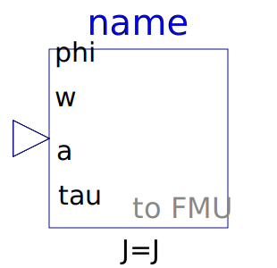

This package contains utility models and functions used by some of the example models from the rotational mechanics package.
| Name | Description |
|---|---|
|
|
Input/output block of a direct inertia model |
|  InverseInertia | Input/output block of an inverse inertia model |
|
|
Input/output block of a spring/damper model |
| Input/output block of a spring model | |
|
|
Linear 1D rotational spring and damper in parallel (phi and w are not used as states) |